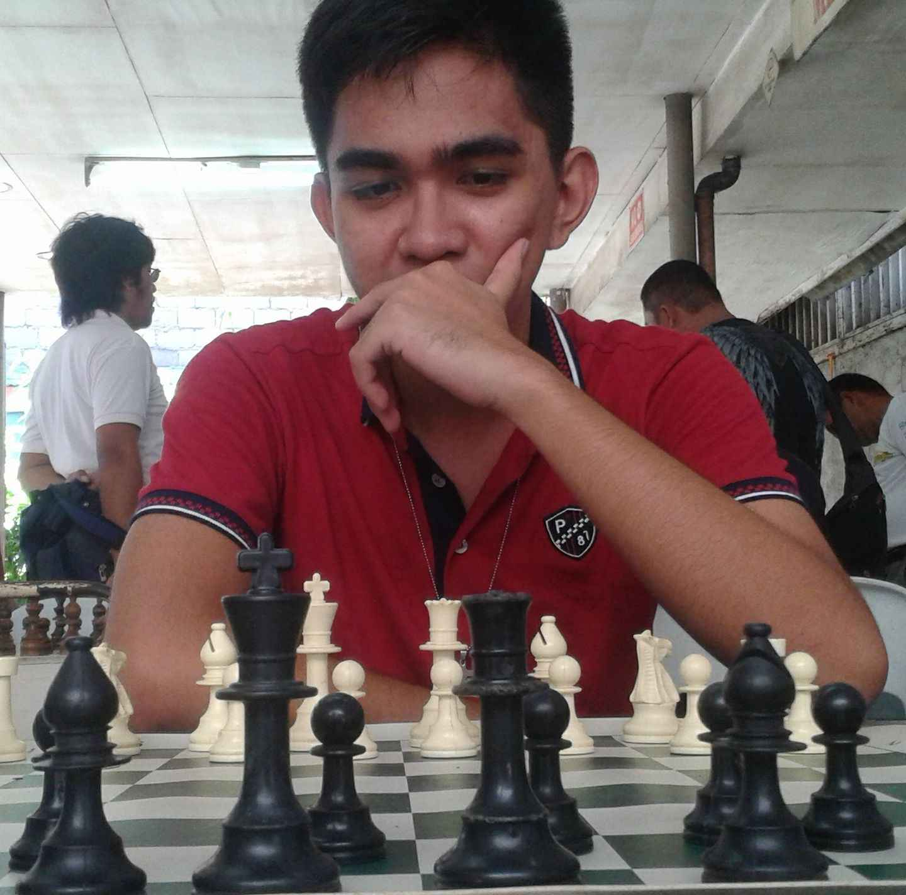
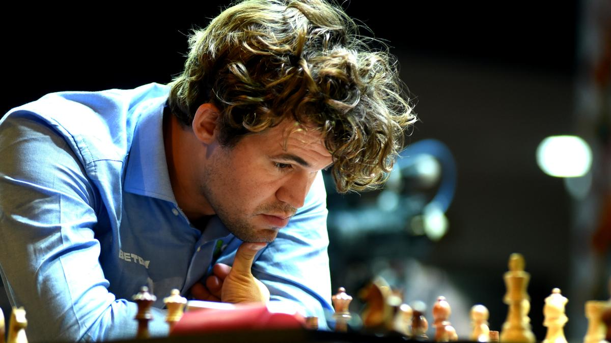
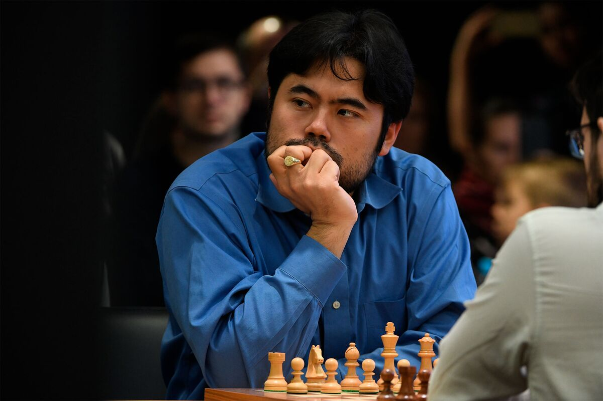
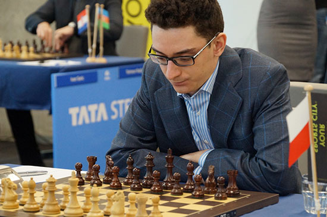
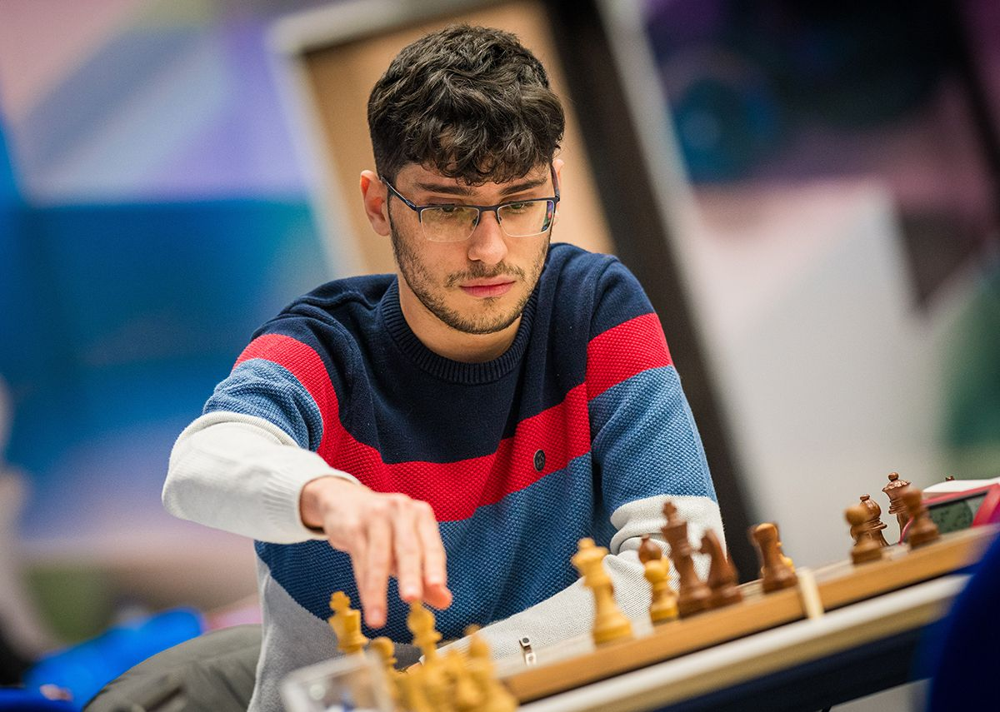
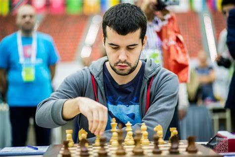

I'm Rommel Sevilla, a passionate chess player who began my journey at the age of 15. Back then, I was just discovering the beauty and complexity of the game. Like many beginners, I faced countless losses, but each one taught me something new. I committed myself to improving through online play, studying classic matches, solving tactics daily, and watching countless videos to understand deeper strategies and patterns.
By the time I reached my fourth year in school, my dedication started to pay off. I began to rise in the ranks, surprising even myself by defeating experienced and professional players in various tournaments. Some of my proudest victories include beating several Class A rated opponents—games that tested my preparation, resilience, and tactical sharpness.
While I have occasionally gone head-to-head with higher-rated players like AGM (Arena Grandmasters) and AFM (Arena FIDE Masters), those games are tougher battles where wins are rare. Still, each encounter has helped sharpen my skills and strengthen my resolve to improve.
Today, I continue to pursue excellence in chess, always eager to learn and challenge myself. Whether it’s blitz, rapid, or classical formats, I embrace the game with the same curiosity and passion I had as a 15-year-old — only now, with more experience, strategy, and confidence.

[Event "Rated blitz game"]
[Site "https://lichess.org/LB02RRJn"]
[Date "2025.04.01"]
[White "SolohnenQo"]
[Black "rjspc18"]
[Result "1-0"]
[Opening "Queen's Pawn Game: Zukertort Variation"]
1. Nf3 d5 2. d4 c6 3. g3 Nd7 4. Bg2 Ngf6 5. O-O g6 6. c4 e6
7. Nc3 Bg7 8. cxd5 exd5 9. e4 dxe4 10. Qe2 O-O 11. Nxe4 Re8
12. Nxf6+ Nxf6 13. Qd3 Bf5 14. Qb3 b6 15. h3 Qd7 16. Be3 Bxh3
17. Ne5 Rxe5 18. dxe5 Nd5 19. Bd4 Bxg2 20. Kxg2 Qg4 21. f4 h5
22. Qf3 Qf5 23. Rac1 Nb4 24. a3 Nd3 25. Rxc6 Rd8 26. Bc3 Nc5
27. Rd6 Re8 28. Rf2 Bf8 29. Rf6 Qb1 30. f5 Ne4 31. fxg6 Nxf2
32. gxf7+ Kh7 33. Qxh5+ { Black resigns. } 1-0
[Event "Rated blitz game"]
[Site "https://lichess.org/IBVWjUFa"]
[Date "2025.04.01"]
[White "HerCal"]
[Black "rjspc18"]
[Result "0-1"]
[WhiteElo "1871"]
[BlackElo "1906"]
[Opening "Indian Defense"]
1. d4 Nf6 2. Bf4 d5 3. e3 c6 4. Nf3 Nbd7 5. Bd3 g6
7. Qe2 O-O 8. e4 dxe4 9. Nxe4 Nxe4 10. Bxe4 Nf6 11. Bd3 Bg4
12. h3 Bxf3 13. gxf3 Qxd4 14. Be3 Qxb2 15. Rb1 Qxa2 16. Rxb7
Nd5 17. O-O Nxe3 18. fxe3 e6 19. h4 Qa3 20. Rf2 Rfb8 21. Rxb8+
Rxb8 22. h5 Rb1+ 23. Kg2 Qe7 24. f4 Qh4 25. Rf1 Rxf1
26. Kxf1 Qh3+ 27. Kf2 gxh5 28. Be4 Qh2+ 29. Ke1 Qxe2+
30. Kxe2 c5 31. Kf3 f5 32. Bc6 h4 33. Kg2 Kf7 34. Kh3 Bf6
35. c4 Ke7 36. Bb7 a5 37. Bc6 Kd6 38. Ba4 e5 39. fxe5+
Kxe5 40. Bd7 h5 41. Be8 Ke4 42. Bxh5 Kxe3 43. Bg6 f4
44. Bf7 f3 45. Bd5 f2 46. Kg2 Ke2 47. Bf3+ Ke1 { White resigns. } 0-1
[Event "Rated blitz game"]
[Site "https://lichess.org/m9UYmHR1"]
[Date "2025.03.29"]
[White "rjspc18"]
[Black "arbertitoclaps"]
[Result "0-1"]
[UTCDate "2025.03.29"]
[UTCTime "02:36:23"]
[WhiteElo "1920"]
[BlackElo "1910"]
[WhiteRatingDiff "-14"]
[BlackRatingDiff "+6"]
[Variant "Standard"]
[TimeControl "180+2"]
[ECO "B50"]
[Opening "Sicilian Defense: Modern Variations"]
[Termination "Normal"]
1. e4 c5 2. Nf3 d6 3. Bc4 Nc6 4. d3 Nf6
5. O-O Bg4 6. c3 e6 7. Nbd2 Be7 8. a3 Qc7
9. b4 Ne5 10. Bb2 a6 11. Rc1 b5 12. Bb3 Nxd3
13. Qc2 Nxc1 14. Rxc1 c4 15. Ba2 O-O 16. Bb1 Qc6
17. Re1 d5 18. exd5 Qxd5 19. Re5 Qd3 20. Qd1 Bxf3
21. gxf3 Qd6 22. Qe1 Rad8 23. Bc1 Nd7 24. Rh5 g6
25. Rh3 Bf6 26. Ne4 Qe7 27. Nxf6+ Qxf6 28. Bh6 Rfe8
29. Qc1 Nf8 30. Bg5 Qg7 31. Bxd8 Rxd8 32. Be4 Nd7
33. Qd2 Qf6 34. Qh6 Ne5 35. Qxh7+ Kf8 36. f4 Nd3
37. Bxd3 cxd3 38. Qh6+ Ke7 39. f5 d2 40. Qe3 d1=01+
41. Kg2 Qg4+ 42. Rg3 Qfxf5
{ White resigns. } 0-1

Magnus Carlsen, the Norwegian chess prodigy and former World Champion, is known for his creative strategy and dominating presence on both classical and rapid formats. His positional mastery has inspired a generation of chess lovers.
More
Hikaru Nakamura is a fan favorite for his electrifying blitz skills and success in online chess tournaments. As a five-time U.S. Champion, Hikaru bridges elite play and global streaming audiences.
More
Fabiano Caruana, the American-Italian grandmaster, is known for his deep calculation and classical tournament performances. He came close to winning the World Championship title in 2018, tying the classical portion with Carlsen.
More
Alireza Firouzja, a young talent representing France, has become a sensation with his aggressive style and rapid rise in ratings. At just 18, he was ranked among the world’s top players, showing the promise of a future world champion.
More
Ian Nepomniachtchi, representing Russia, is known for his sharp and tactical style. He was the challenger in multiple World Championship matches and a consistent force in elite-level classical tournaments.
More